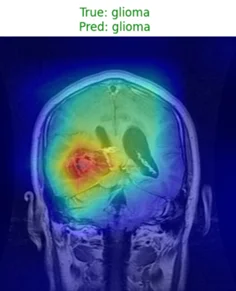
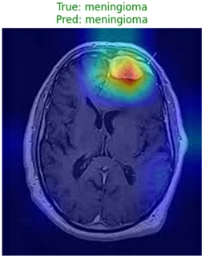
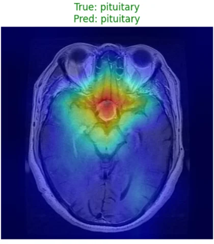
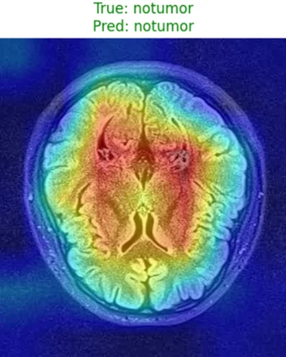

The problem
Brain tumors present differently across MRI scans, and early detection improves patient outcomes. The goal is a system that recognizes four diagnostic categories, glioma, meningioma, pituitary tumor and no tumor, and that makes its decisions inspectable: Grad-CAM heat maps highlight the regions that most influence each prediction.
Educational and research project. It is not a medical device and must not be used for diagnosis.
The data
The Brain Tumor Dataset on Kaggle: labeled axial MRI slices with variations in acquisition quality, brightness, orientation and anatomy.
- Training: 5,712 scans, split 80/20 with stratification into 4,569 for training and 1,143 for validation.
- Test: 1,311 scans: 300 glioma, 306 meningioma, 405 no tumor, 300 pituitary.
Approach
- MRI slice
- Preprocessingwith augmentation
- CNN or EfficientNetB0two models compared
- Softmax4 classes
- Grad-CAMwhere the model looked
- Baseline: custom CNN
Stacked
Conv2DandMaxPooling2Dlayers,Dropoutregularization, aFlattenand dense head, trained from scratch with Adam. It sets the bar to beat. - Transfer learning: EfficientNetB0
Pretrained on ImageNet, frozen then partially fine-tuned, with a new head:
GlobalAveragePooling2D, dense ReLU layer, dropout and softmax. Better generalization and faster convergence.
Results
| Model | Test accuracy | Test loss | Macro F1 | Weakest class (recall) |
|---|---|---|---|---|
| Custom CNN (baseline) | 92.14% | 0.208 | 0.92 | meningioma (0.79) |
| EfficientNetB0 (fine-tuned) | 97.79% | 0.057 | 0.98 | meningioma (0.94) |
The two models were not trained under strictly identical conditions (class weights and augmentation strength differ), so the gap reflects the whole pipeline rather than the architecture alone.
Explainability with Grad-CAM
Grad-CAM heat maps highlight the regions that most influence each prediction, here on one random test sample per class (seeded).

Glioma 
Meningioma 
Pituitary 
No tumor
On these samples the activation concentrates on the lesion area, which is consistent with the model using tumor-related features. This is qualitative evidence only: it is not a quantitative validation, such as overlap with the dataset’s segmentation masks, and it does not rule out dataset biases.
Reproducible pipeline
The notebook is the original exploratory work and the source of the results above. The src/ package addresses its main weaknesses:
| Module | Purpose |
|---|---|
dedup.py | Perceptual-hash (dHash) clustering of near-duplicates: a leak-free train/validation split, grouped and stratified, and detection of training images that also appear in the test set |
data.py | tf.data pipeline with Keras augmentation layers, replacing the deprecated ImageDataGenerator |
models.py | CNN baseline and EfficientNetB0; fine-tuning keeps BatchNorm frozen |
train.py | Trains either model with the same split, augmentation, class weights and epoch budget, and writes a leakage report |
gradcam.py | Grad-CAM for both architectures, also on reloaded models |
localization.py | Quantitative Grad-CAM validation against tumor masks: pointing game, IoU@0.5, energy in the mask, against a random heat-map baseline |
evaluate.py | Test metrics with bootstrap 95% intervals, calibration (ECE), top confusions, Grad-CAM gallery of the most confident errors |
python -m src.train --model cnn # -> artifacts/cnn.keras
python -m src.train --model tl # -> artifacts/tl.keras
python -m src.evaluate --model artifacts/tl.keras --seg-dir /path/to/DATASET/segmentation
pytest # synthetic-data tests, no dataset neededThe code is tested on synthetic data, with unit tests and a train-then-evaluate smoke run that includes Grad-CAM on reloaded models. It has not yet been run on the real dataset, so the numbers on this page still come from the notebook. Segmentation images do not share file names with the classification ones, so they are matched by content (dHash) to know whether each belongs to the test set, the training set or neither; only the test group gives an unbiased localization score.
Limits and next steps
Validation accuracy (99.9%) is noticeably higher than test accuracy (97.8%), a sign of near-duplicates shared between training and validation. src/dedup.py quantifies and removes them; re-running with it is the next step and may lower the reported figures.
- Classification, not segmentation: the model predicts a category but does not localize tumors pixel by pixel.
- Single run: one seed; with 1,311 test images the 95% interval on accuracy is roughly ±0.8 point.
- Generalization to real-world MRI: domain shift across scanners and protocols is untested; there is no external validation set.
- Explainability: the Grad-CAM figures are qualitative;
src/localization.pyprovides the quantitative check, still to be run on the real data.
Reproduce
git clone https://github.com/Victor-MICHELON/Brain_Tumor_Classification.git
cd Brain_Tumor_Classification
python -m venv .venv && source .venv/bin/activate
pip install -r requirements.txt
# dataset: Kaggle indk214/brain-tumor-dataset-segmentation-and-classification
export DATASET_DIR=/path/to/DATASET/classification # contains Training/ and Testing/
jupyter notebook mri-tumor-classification-cnn-transfer-learning.ipynbA GPU is strongly recommended for fine-tuning. Seeds are fixed (SEED = 42), but GPU runs are not bit-for-bit deterministic.
Python, NumPy, pandas, TensorFlow and Keras (EfficientNetB0), scikit-learn, Matplotlib, Seaborn, Plotly, Grad-CAM implemented by hand